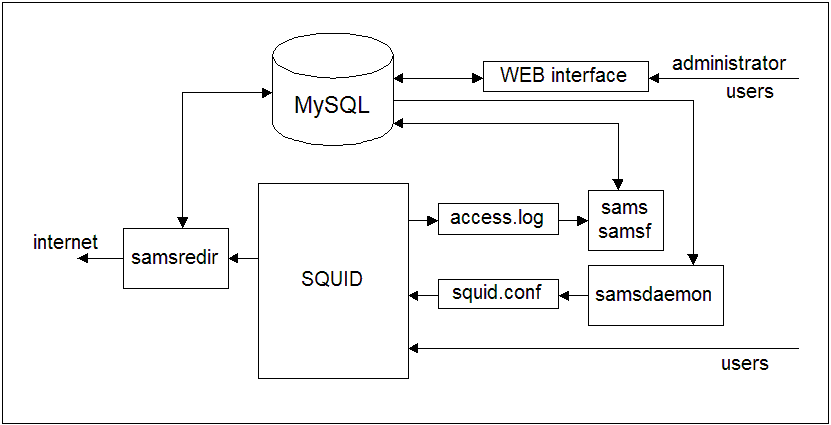

Обработка логов SQUID производится двумя утилитами:
программа sams регулярно вызывается демоном samsdaemon для чтения файла логов SQUID access.log и занесения данных в базу данных MySQL. При превышении пользователем квоты трафика происходит отключение пользователя и выдача команды на реконфигурирование SQUID.
демон samsf запускается демоном samsdaemon и создает fifo файл access.log,
в кторой SQUID пишет свои логи. Если уже существовал текстовый файл access.log,
он переносится в файл access.log.{time stamp}.
Демон samsf заносит данные о трафике в базу данных MySQL.
Обработка данных демоном
samsf происходит непрерывно, и реакция на превышение
пользователем трафика более быстрая, чем утилиты sams.
При превышении пользователем квоты трафика происходит отключение
пользователя и выдача команды на реконфигурирование SQUID.
демон samsdaemon постоянно ждет команду на реконфигурирование SQUID. При ее получении от WEB интерфейса sams или программ sams и samsf samsdaemon призводит:
Редиректор samsredir запускается при старте SQUID. На основе информации о пользователях, полученной из базы данных SAMS редиректор производит: